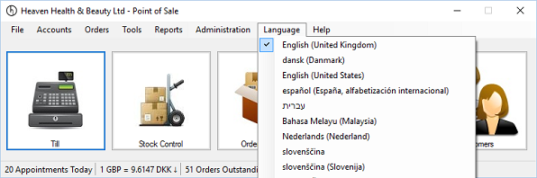

Display Language
Previous
Top
Next
The POS can be localized into many different languages, language selection can be changed by selecting the
Language
menu item

Please view User - Language Settings section for information on how to show or hide the Language menu.